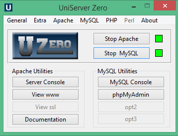

|
|
The Uniform Server Zero XIV |
Welcome to The Uniform Server and this documentation, which is for the Zero series. The Uniform Server is a free and open source Windows Apache-MySQL-PHP-Perl server suite. The Uniform Server is an excellent system for both beginning webmasters and experienced developers. It is a full-power web-server suitable for production use, but small enough to carry on a USB memory stick, or even a camera's flash drive. Covered in this document is the pre-configured server (UniServer Zero 14_x_x_ZeroXIV) and modules required to assemble your own bespoke server.
|  |
Background
Uniform Zero takes a fresh look at Apache, MySQL, PHP and Perl portability. Uniform Server has been redesigned from the ground up; emphasis is given to reducing code size. This is achieved through a modular implementation using plugins. Install only the plugins you require; this avoids the dreaded bloat-ware scenario. Server control is provided by UniController, a Pascal application written and compiled using Lazarus.
For new users, creating a bespoke server can be daunting. To address this, UniServer Zero releases 14_x_x_ZeroXIV are versions with pre-installed Zero XIV modules (plugins), producing a standard WAMP (Windows, Apache, MySQL and PHP) server package. This package is fully portable, allowing you to run servers from a USB memory stick.
In the context of this documentation, portability is defined as an application that does not install data in the registry on a host PC. Generally, applications ported to Windows from a Unix environment are inherently portable; for example: Apache, MySQL, PHP and Perl. These require only a few minor tweaks to run in portable mode.
Applications can be run either as a standard program or as a service; Uniform Server Zero supports both methods. Running an application as a standard program requires that application to be manually restarted after powering-up a PC and logging in. This disadvantage is resolved by optionally placing an entry in the start-up menu to provide automatic restarting after logging in. Although not portable, it is a small concession for users that require this functionality. In contrast, applications that run as a service automatically start after powering-up a PC; this is the preferred method when running a production server. Again, this is not portable; remember to uninstall services before moving servers.
Similarly, editing the Windows hosts file is not a portable operation. That said, Uniform Server Zero provides support to manually and automatically add and delete entries in this file.
We strongly suggest that you check over the points on this page, as they provide important information that may help you avoid common problems. The following two sections (Installation - pre-configured server and Installation - bespoke server) will have you up and running in seconds. A more detailed step-by-step guide is provided on the Quick Start Guide page.
Installation - pre-configured server
Installing is a misnomer! Nothing is installed to your PCs registry. All files are extracted to their appropriate location within the UniServer folder structure. To install the pre-configured server, proceed as follows:
Note 1: Button states toggle to Stop Apache and Stop MySQL; click to stop servers. Note 2: Installing your website: except for file .htaccess, delete the contents of folder UniServerZ\www and then copy your site to this folder. If your site uses a database, use phpMyAdmin to create it. |
Installation - bespoke server
Again, installing is a misnomer! Nothing is installed to your PCs registry. All files are extracted to their appropriate location within the UniServer folder structure. Unlike a pre-configured server, a bespoke server requires more work on your part. It is assembled from individual plugin modules as follows:
Controller
The Uniform Server Zero's base component is the controller application. Download and extract this base component first as follows:
|
Install controller:
Utility option buttons (opt1-opt3) are initially unassigned. Although MySQL modules have been pre-assigned to these buttons, you can change their assignment and button text. However, it is recommended you keep the pre-assignments. |

|
Plugins
The Uniform Server Zero design is modular. Install only the plugins (modules) that you require. Each server requires a controller (covered above), which automatically detects installed plugins.
The extraction procedure is identical for all plugins and applies to both pre-configured and bespoke servers. Proceed as follows:
Install plugins:
- If running, stop Apache and MySQL servers. Close UniController.
- Download required plugin installation file. For example, ZeroXIV_phpmyadmin_x_x_x.exe installs phpMyAdmin.
- Save the downloaded file to folder UniServerZ.
- Double-click on the above installation file. This runs the self extracting archive.
- If prompted, allow overwriting of existing files.
- If you wish, delete the installation file; it is no longer required.
Note: For full plugin details, refer to Plugins - Modules page.
Installation Restriction
There is one aspect that needs to be validated. This is especially true if you have been unable to start the servers.
Server Paths
The installation (extraction) defaults to creating "C:\UniServerZ". The documentation examples assume this default. You can install The Uniform Server Zero in nearly any location, with the exception that the path to folder UniServerZ must not contain spaces. Do not use "C:\Program Files", for example (which has other problems as well, such as restricted permissions and system restore inconsistencies). We recommend installing to the drive root, such as "C:\" or "D:\" for simplicity. Other locations, such as "C:\test1\appserver", work just as well.
Note: The space character restriction is generic and applies to other WAMP stacks as well. Many applications that will be hosted on the server do not tolerate spaces in paths. The system restore issue applies mainly to individual component installations.
If the current installation is on a faulty path, the situation can easily be resolved by just moving the UniServerZ directory to a proper location. You do not have to delete the directory and reinstall. For example, just move "D:\bad path\UniServerZ" to "D:\good_loc\UniServerZ".
Help
Two levels of help are provided: local help as instant pop-up message boxes and detailed help in this documentation, directly linked by the Documentation controller button.
Security
The security of your server is one of our primary concerns, and for that reason the default settings are oriented for production. We take this seriously and ask that if you believe that a setting is not right for production, you email us or post it in the forum. We will look into it and see if it should be changed.
In this light, before you can run the servers, several nag screens are presented. Initially, you can click No to each of these. See the Quick start guide for further details.
In order to allow access to your server by other users (Internet or Intranet), you must manually enable the required functions. See Apache dropdown menu option Access and Passwords for details.
Other Issues
This section covers the basics a new user should be aware of.
Note: Uniform Server 14_x_x_ZeroXIV does not run on Windows XP or Windows Server 2003.
VS16 Libraries
Apache, PHP 7.*.* and PHP 8.*.* binaries are compiled with VS16. Ensure you have installed the Visual C++ Redistributable for Visual Studio 2015-2022: vc_redist_x64/86.exe
This can be found at Visual C++ Redistributable for Visual Studio 2015-2022.
Be sure to select the package appropriate for your OS and hardware (select: vc_redist.x86.exe).
If you do not have the VS16 library, when you attempt to start the servers, you will get a runtime error popup.
MySQL Access
The MySQL server supports IPv4 and IPv6; localhost resolves to 127.0.0.1 and ::1 respectively.
You can bypass the resolver by using an IP address; for example, you can force an IPv4 address by replacing localhost with 127.0.0.1.
During third party application installations (for example, MediaWiki and Wordpress), you are requested to enter a MySQL host name. Use IP address 127.0.0.1
Windows and UAC
The startup executables have been marked as requiring Administrator privilege. When you start these programs, you must authorize this access in order to continue.Firewalls
When you initially start the servers, your firewall will sense the programs' requests for IP access, and (typically) will require your authorization to change the security. If you have a third-party firewall activated (Symantec, ZoneAlarm, etc.), be sure to set the port access as required since it may not display a message.
Skype
Apache and Skype both use standard port 80. If you have Skype running, it will clash with your local server. To prevent Apache and Skype clashing, you need to adjust the Skype settings as follows:
- Log into your Skype
- Go to Tools>Options>Advanced>Connect
- Uncheck the box which says Use Port 80 and 443
- Click Save
Where to next
Quick Start - This page provides a quick start guide
Site Map - Main site index